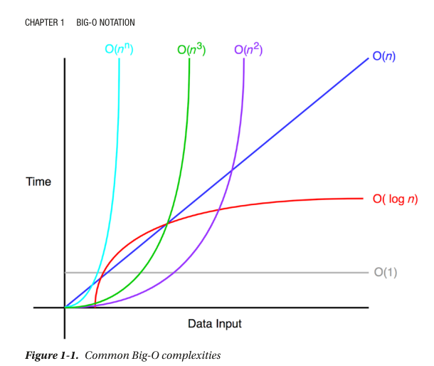

The Big-O notation measures the worst-case complexity of an algorithm. In Big-O notation, n represents the number of inputs. The question asked with Big-O is the following: “What will happen as n approaches infinity?” When you implement an algorithm, Big-O notation is important because it tells you how efficient the algorithm is. Figure 1-1 shows some common Big-O notations.
The following sections illustrate these common time complexities with some simple examples.
O(1) does not change with respect to input space. Hence, O(1) is referred to as being constant time. An example of an O(1) algorithm is accessing an item in the array by its index. O(n) is linear time and applies to algorithms that must do n operations in the worst-case scenario.
An example of an O(n) algorithm is printing numbers from 0 to n-1, as shown here: